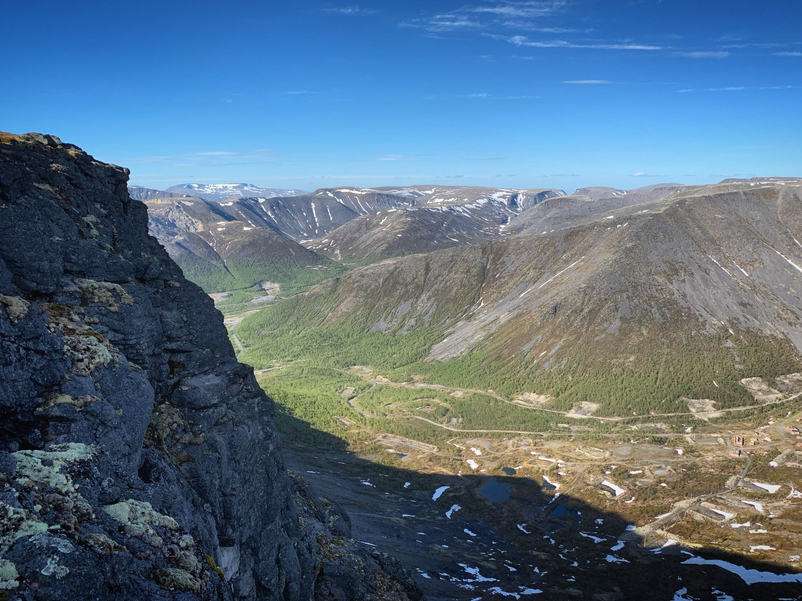

Полевой журнал № 01 / сезон 2027
Хибины.
Горный круг.
За четыре дня пройдём 38 км: долина Малой Белой, перевал Южный Чорргор и ночёвка у озера. Стартуем из Кировска 12 июля.
12—15 июляБлижайший выход
38 км / 4 дняПеший маршрут
до 8 человекРазмер группы

КОЛЬСКИЙ ПОЛУОСТРОВ · 01 / 0438 км пешкомКировск → Малая Белая → Чорргор → КировскПосмотреть район на карте ↗
Каталог / сезон 2027
Четыре
маршрута.
Длина, дни в пути и стоимость каждой поездки указаны сразу. Нажмите на карточку, чтобы добавить маршрут в расчёт.
Что включено
Маршрут
без мелкого
шрифта.
01
До 8 человек
Идём небольшим составом. В пути хватает и разговоров, и тишины.
02
Всё важное включено
Гид, ночёвки и программа уже в цене маршрута. Дополнения видны в расчёте.
03
Понятный темп
Каждый день размечен заранее: километраж и сложность можно посмотреть до выбора.
Планирование / 01
Соберите
свой маршрут.
Рассчитайте поездку и сохраните план на этом устройстве. Никакой заявки без вашего действия не отправляется.